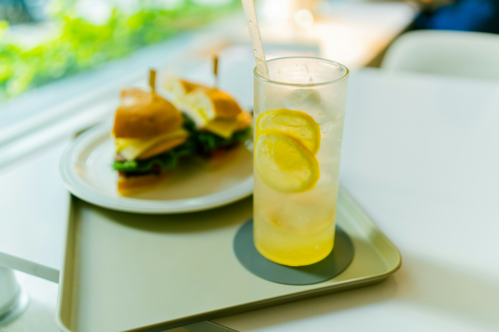

Lemonade Recipe

A refreshing crowd pleaser for all ages
Lemonade is just the perfect party drink.
It's refreshing, and cold, and most people are going
to be excited when they see it on the table. I think
it's important to keep lemonade simple, so don't try
to overthink it or worry that it's not fancy enough
for your guests. It's simple, but carries its legacy
well. There's a reason it's a staple.
Ingredients
- 1 3/4 cups white sugar
- 1 cup water
- 9 medium lemons, or more as needed
- 7 cups ice-cold water
- ice as needed
Steps
- Gather all ingredients.
- Combine sugar and 1 cup water in a small saucepan. Stir to dissolve sugar while mixture comes to a boil. Set aside to cool slightly.
- Meanwhile, roll lemons around on your counter to soften. Cut in half crosswise, and squeeze into a liquid measuring cup. Add pulp to the juice, but discard any seeds. Continue juicing until you have 1 1/2 cups fresh juice and pulp.
- Pour 7 cups ice-cold water into a pitcher. Stir in lemon juice and pulp, then add simple syrup to taste. Add ice.
- Serve and enjoy!
Home